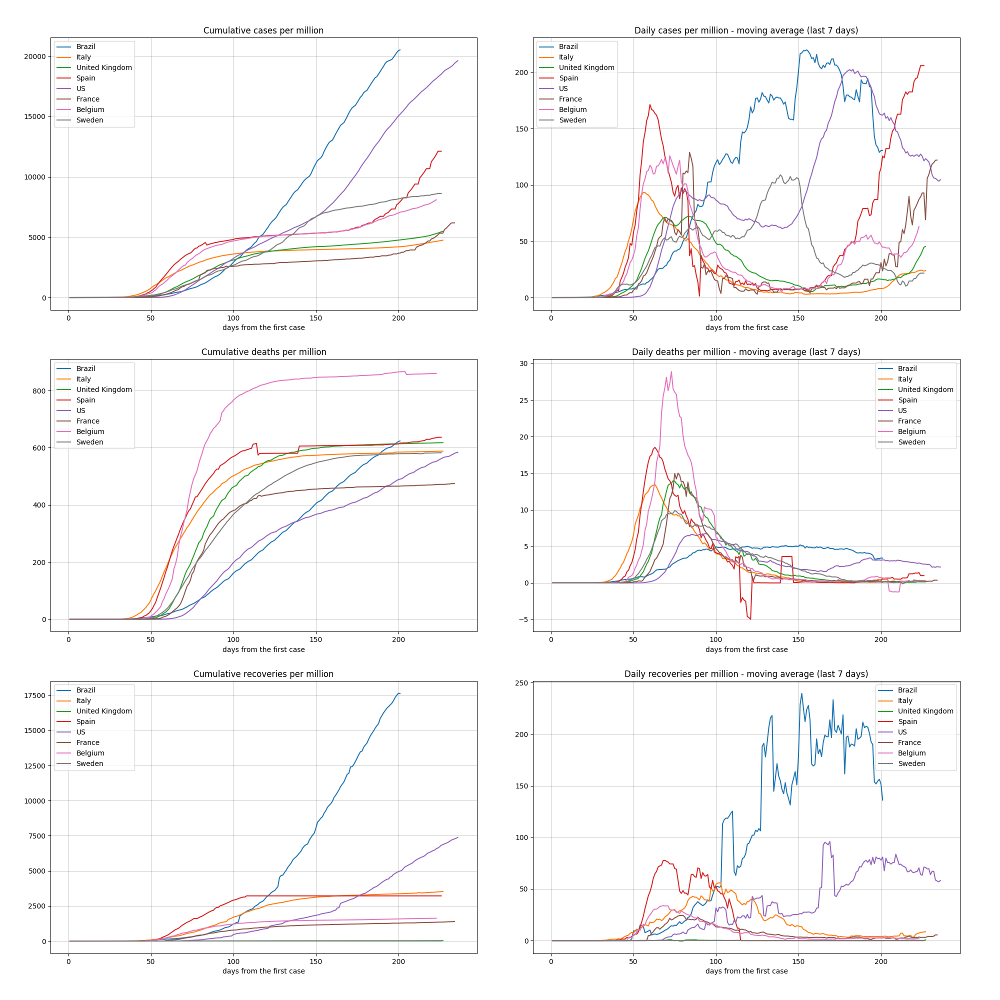
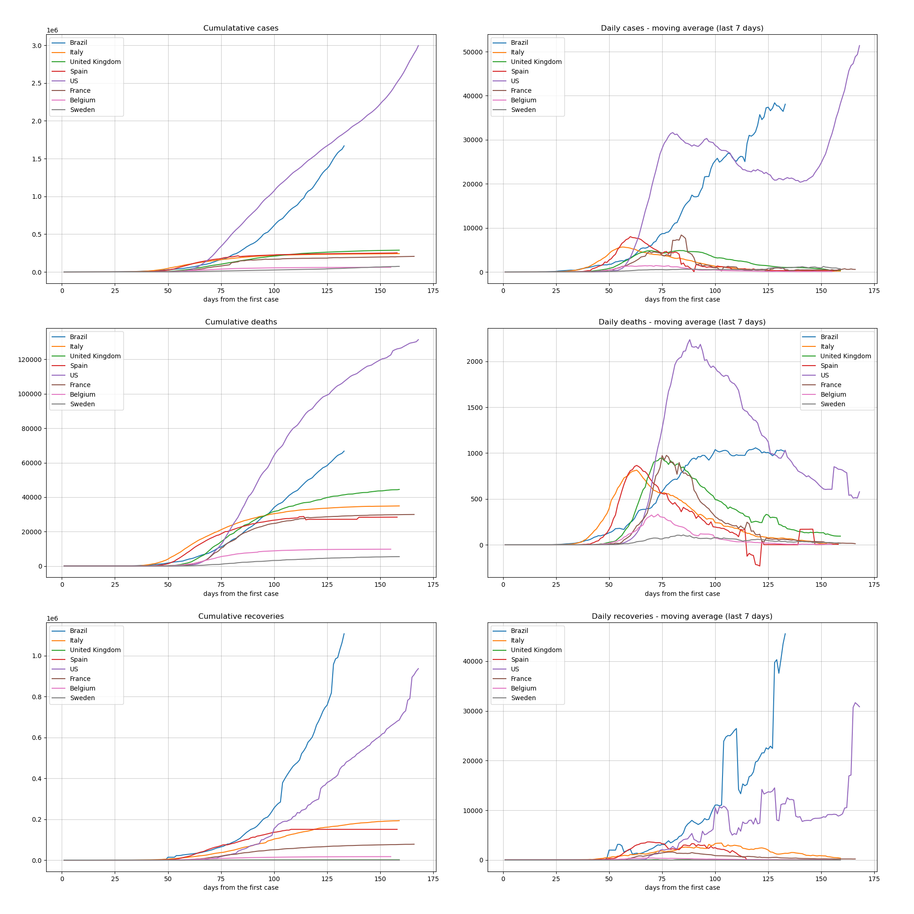
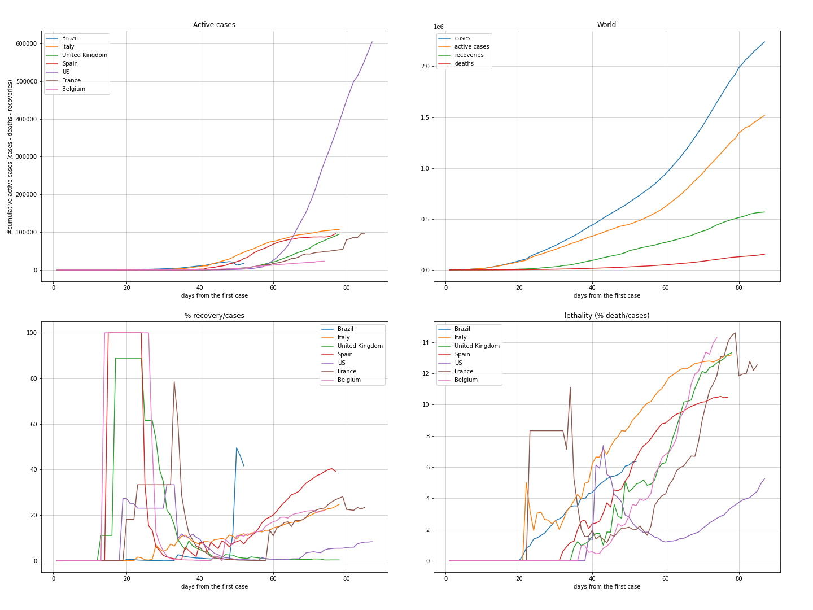

These analysis are related to the Covid19 pandemic data up to 11/16/2020.
This information is for own use only and shall NOT be used for medical and public policy guidances.
To permit a better vizualization, I selected the follow countryies plus Brazil to be compared with each other: Brazil, Italy, United Kingdom, Spain, Us, France, Belgium, Sweden
This ranking is made from the total of deaths per each thousand of population of each country.
| country | day | date | cases | case_day | deaths | death_day | perc_death | cases_million | deaths_million | avg7_case_day_million | avg7_death_day_million | avg7_recovery_day_million | |
|---|---|---|---|---|---|---|---|---|---|---|---|---|---|
| 1 | Belgium | 287 | 2020-11-16 | 537871 | 1932,0 | 14616 | 195 | 2,72 | 46612,0 | 1266,6 | 429,443 | 17,329 | -368,871 |
| 2 | San Marino | 264 | 2020-11-16 | 1290 | 37,0 | 42 | 0 | 3,26 | 38093,6 | 1240,3 | 742,471 | 0,000 | 552,629 |
| 3 | Peru | 256 | 2020-11-16 | 937011 | 2112,0 | 35231 | 54 | 3,76 | 28821,8 | 1083,7 | 64,500 | 1,557 | 84,071 |
| 4 | Andorra | 260 | 2020-11-16 | 5914 | 42,0 | 76 | 0 | 1,29 | 76659,8 | 985,1 | 883,300 | 1,857 | 922,200 |
| 5 | Spain | 290 | 2020-11-16 | 1496864 | 38273,0 | 41253 | 484 | 2,76 | 32027,5 | 882,7 | 353,500 | 5,843 | 0,000 |
| 6 | Argentina | 259 | 2020-11-16 | 1318384 | 7893,0 | 35727 | 291 | 2,71 | 29440,9 | 797,8 | 216,586 | 5,829 | 212,514 |
| 7 | Brazil | 265 | 2020-11-16 | 5876464 | 13371,0 | 166014 | 216 | 2,83 | 27844,0 | 786,6 | 136,343 | 2,300 | 116,600 |
| 8 | Chile | 268 | 2020-11-16 | 532604 | 1331,0 | 14863 | 44 | 2,79 | 28102,7 | 784,2 | 73,300 | 2,086 | 69,071 |
| 9 | Mexico | 263 | 2020-11-16 | 1009396 | 2874,0 | 98861 | 319 | 9,79 | 7912,1 | 774,9 | 40,986 | 4,071 | -78,557 |
| 10 | United Kingdom | 291 | 2020-11-16 | 1394299 | 21415,0 | 52240 | 214 | 3,75 | 20647,1 | 773,6 | 375,600 | 6,157 | 0,286 |
| 7 | Brazil | 265 | 2020-11-16 | 5876464 | 13371,0 | 166014 | 216 | 2,83 | 27844,0 | 786,6 | 136,343 | 2,300 | 116,600 |
This ranking is made from the total of cases per each thousand of population of each country.
| country | day | date | cases | case_day | deaths | death_day | perc_death | cases_million | deaths_million | avg7_case_day_million | avg7_death_day_million | avg7_recovery_day_million | |
|---|---|---|---|---|---|---|---|---|---|---|---|---|---|
| 1 | Andorra | 260 | 2020-11-16 | 5914 | 42,0 | 76 | 0 | 1,29 | 76659,8 | 985,1 | 883,300 | 1,857 | 922,200 |
| 2 | Bahrain | 267 | 2020-11-16 | 84882 | 179,0 | 337 | 3 | 0,40 | 51720,6 | 205,3 | 108,829 | 0,686 | 126,671 |
| 3 | Qatar | 262 | 2020-11-16 | 136028 | 243,0 | 235 | 1 | 0,17 | 48031,3 | 83,0 | 80,457 | 0,171 | 76,671 |
| 4 | Belgium | 287 | 2020-11-16 | 537871 | 1932,0 | 14616 | 195 | 2,72 | 46612,0 | 1266,6 | 429,443 | 17,329 | -368,871 |
| 5 | Luxembourg | 262 | 2020-11-16 | 27256 | 1325,0 | 236 | 17 | 0,87 | 44266,2 | 383,3 | 934,771 | 9,971 | 886,529 |
| 6 | Montenegro | 245 | 2020-11-16 | 27773 | 596,0 | 396 | 5 | 1,43 | 44225,4 | 630,6 | 947,471 | 12,271 | 403,329 |
| 7 | Czechia | 261 | 2020-11-16 | 465523 | 5407,0 | 6416 | 208 | 1,38 | 43550,7 | 600,2 | 646,071 | 18,543 | 1299,629 |
| 8 | Armenia | 261 | 2020-11-16 | 117886 | 549,0 | 1788 | 25 | 1,52 | 39856,9 | 604,5 | 503,286 | 10,057 | 529,129 |
| 9 | Israel | 270 | 2020-11-16 | 324755 | 1014,0 | 2735 | 3 | 0,84 | 38119,6 | 321,0 | 76,657 | 0,971 | 78,286 |
| 10 | San Marino | 264 | 2020-11-16 | 1290 | 37,0 | 42 | 0 | 3,26 | 38093,6 | 1240,3 | 742,471 | 0,000 | 552,629 |
| 20 | Brazil | 265 | 2020-11-16 | 5876464 | 13371,0 | 166014 | 216 | 2,83 | 27844,0 | 786,6 | 136,343 | 2,300 | 116,600 |
Some countries are not in UN dataset, so we can not analyse them by population. They can be found at the end of the data_engineering.ipynb.
Million of population normalizes the numbers in such way we can compare them among the countries in a reasanoble way. The moving average allow us to see the downs and ups of the curves, that is, when the situation begins to decrease (or get better ) in a country.
It is possible to observe how agressive is the pandemic in Italy, Spain and mainly in Belgium, where the leader denied feaverly to close the country.


